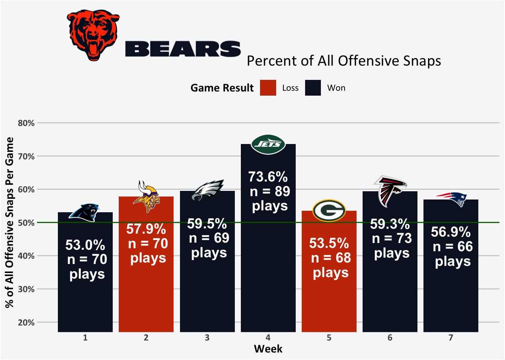
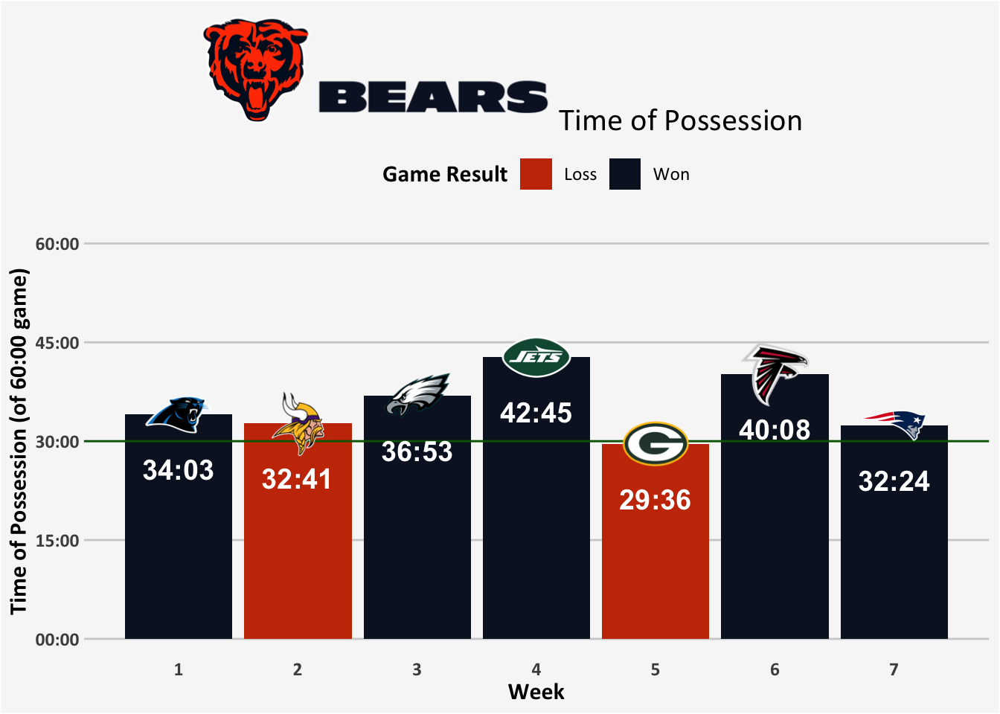
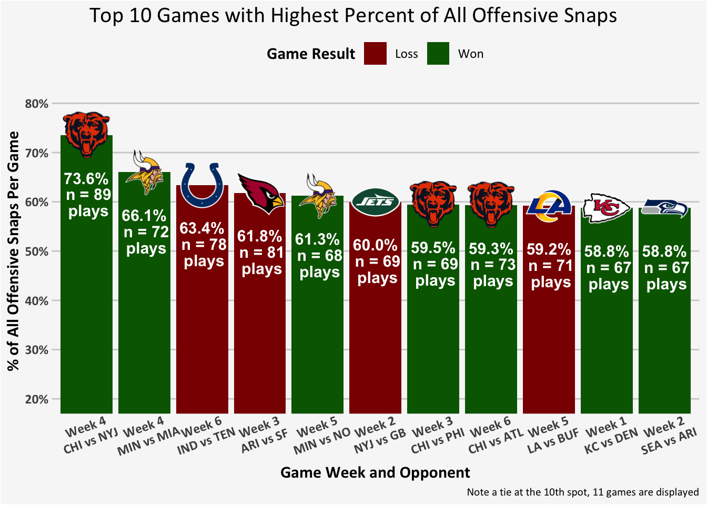
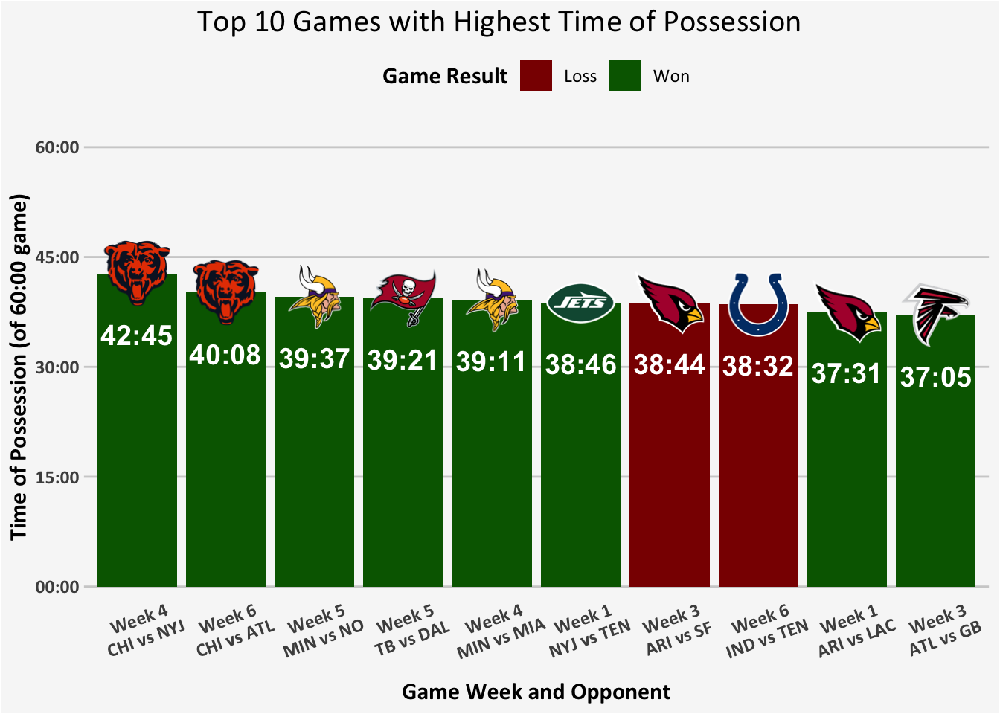

I’ve been hearing lots of talking points lately about the Bears dominating the time of possessions and number of offensive snaps per game. That was particularly true in week 4 against the Jets, the most lopsided game in terms of both metrics of the whole season. Just one example here:
NoteNitty-gritty of offensive plays and time of possession
While I have been able to match offensive plays to some stats I see online, I can’t quite replicate in the nflverse data the stats I see online for time of possession. However, I don’t even know if it’s fair to say that different online sources always agree. While the NFL does have a Guide for Statisticians with official definitions any code actually trying to implement that may hit some issues when dealing with the rare and odd plays.
(Likely candidates for discrepancies: kickoffs in particular are supposed to be awarded to the team that ends up with the ball — usually the receiving team, barring a turnover — and the Bears in particular did turnover the ball on a kickoff against Atlanta. In addition, penalties on kickoffs that may be accepted or declined can make time of possession messy. It’s worth noting that punts are supposed to be counted for time of possession to the team who starts the snap with the ball, so the kicking team, and thus the two muffed punts recovered by the Bears should not actually impact that calculation — but side note to shout out Tory Taylor with the banana ball.)
Ultimately, it just wasn’t worth it to me to invest the time to capture a very small number of messy plays that are probably driving the differences (i.e., Online I’m seeing Bear’s average time of possession as 35:30 through week 7, but I’m finding 35:17; for second place Minnesota 32:43 versus my values of 32:23). I have been able to match the general offensive snaps I am seeing online (i.e., Bears with 505 total or 72.14 per game).
For all of these calculation, I am excluding overtime, focusing only on the original 4 quarters.
For offensive plays, I am using nflverse variable play_type of “run”, “pass”, “qb_kneel”, “qb_spike”, but excluding two point conversions, and summing the number of plays across weeks/games and teams. Punts, kickoffs, extra points, and two point conversions are excluded entirely from these calculations (that is, even from the denominator for % of offensive plays between the two teams will add up to 100% as all other plays are excluded). I tend toward relative percentages of each team, simply because overall counts could reflect other factors including weather that may dictate certain kinds of paces or run vs pass decisions (i.e., I’m not formally checking for this — that could be done and could be interesting — but I might suspect that more extreme weather may change the overall number of snaps for both teams).
For time of possession, I am using nflverse variable drive_time_of_possession and summing all drives across weeks/games and teams.
If I break it down by games, the Bears have controlled offensive snap counts in every game — including the two they lost.
And while they narrowly missed controlling time of possession in their loss at Green Bay (by just 25 seconds), they still controlled time of possession in their other loss to Minnesota.

So are offensive snaps and time of possession just a random curiosity because the Bears happen to be historically high in both, or does it really have anything to do with winning football?
Looking across the 2026 season at the top 10 (actually 11 because of a tie) games in terms of offensive snap percentage, this metric doesn’t guarantee a win.

The top games in terms of time of possession also contain some losses, and even among those who did win: Minnesota is an impressive 6-0 to start the season, but a well established story line is that the team is being carried by defensive coordinator Brian Flores’s insane defense, while the offense has not yet gotten going.

So it seems that offensive snaps and time of possession may not necessarily be metrics that really indicate winning or even a strong offense.
Further looking at these offensive snaps and time of possession by all wins and losses: A winning team has less than 1 additional snap than the losing team on average, and less than a 3 minute advantage in time of possession.
| Offensive Snaps and Time of Possesion by Wins and Losses (n = 106 games) | ||||
| Result | Mean Offensive Plays | Mean Offensive Play % | Mean Time of Possession | Mean Run Plays as % of Offense |
|---|---|---|---|---|
| Loss | 61.3 | 49.6% | 28:35 | 37.5% |
| Won | 62.0 | 50.4% | 31:24 | 47.3% |
| Note: Excluding 1 tie game | ||||
What does stand out is looking at the run vs pass breakdown on offense.1
Winning teams run the ball more often.
Or we could say that losing teams are passing the ball more often.
In fact, the correlation2 of winning with offensive snap percentage is trivially small, winning has a medium sized relationship to time of possession, but winning has a large correlation (r = .50) with a greater preference for offensive run plays over pass plays.
| Correlation with Winning (n = 106 games) | |
| Loss/Win | |
|---|---|
| Offensive Play % | 0.07 |
| Time of Possession | 0.33 |
| Run (vs Pass) | 0.50 |
| Note: Point biserial correlation (excluding 1 tie game) | |
None of these observations would support framing offensive snaps and time of possession as objectives to try to achieve in order to win. The run relationship in particular could hint at a possible reverse direction of causation: When a team already has a lead and they run to salt the game away (as the Bears did against the Eagles), or when a team is trailing and they need to pass to try to catch up quickly, especially as time is running out. And using more run plays will tend to increase time of possession.
Some interesting future analyses could consider these metrics of offensive snaps and time of possession by:
- Whether a team is leading or trailing in the score
- Quarters in the game
- Including some context of explosive plays
(I’ll also note that the Bears in particular have been frustrating in how many plays they have run incredibly close to the goal line, with limited success rates)… which would increase offensive snaps and time of possession, but are not really indicating offensive success and helping to score more points to win.
I do think there are probably some interesting metrics to capture controlling the pace of the game and running sustained drives. And the Bear’s numbers are an incredible outlier, so it is interesting.
But overall, perhaps just pure measures of offensive snap and time of possession metrics are being a bit overemphasized by analysts.🤷♀️
Data citation
Carl S, Baldwin B, Sharpe L, Ho T, Edwards J (2025). nflverse: Easily Install and Load the ‘nflverse’. R package version 1.0.3, https://nflverse.nflverse.com/.
Footnotes
For just the purpose of run vs pass breakdown, offensive snaps are further limited: I have excluded QB kneel down and QB spikes as they are not really runs or passes. I will also note that in contrast to some prior analyses, for these purposes I do count QB scrambles as runs.↩︎
Specifically, a point biserial correlation with a 0/1 variable for loss vs win↩︎